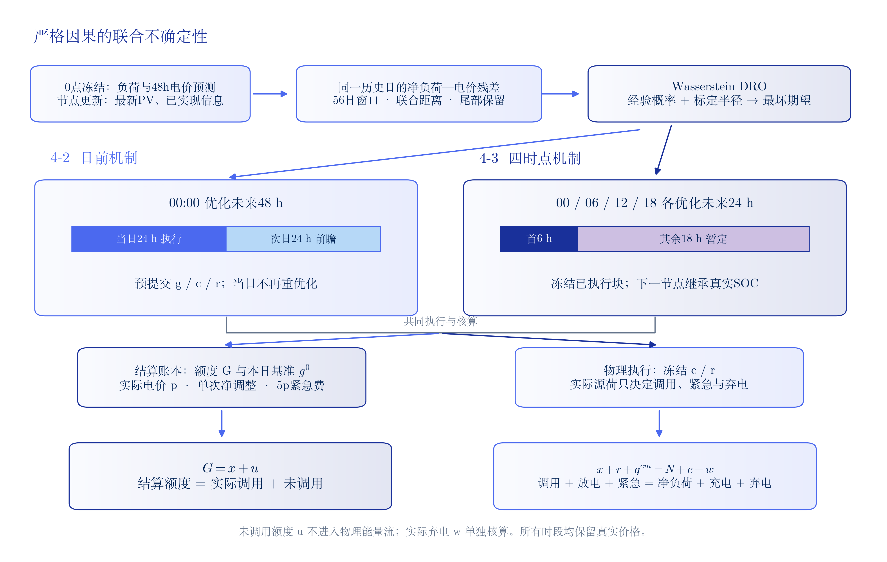
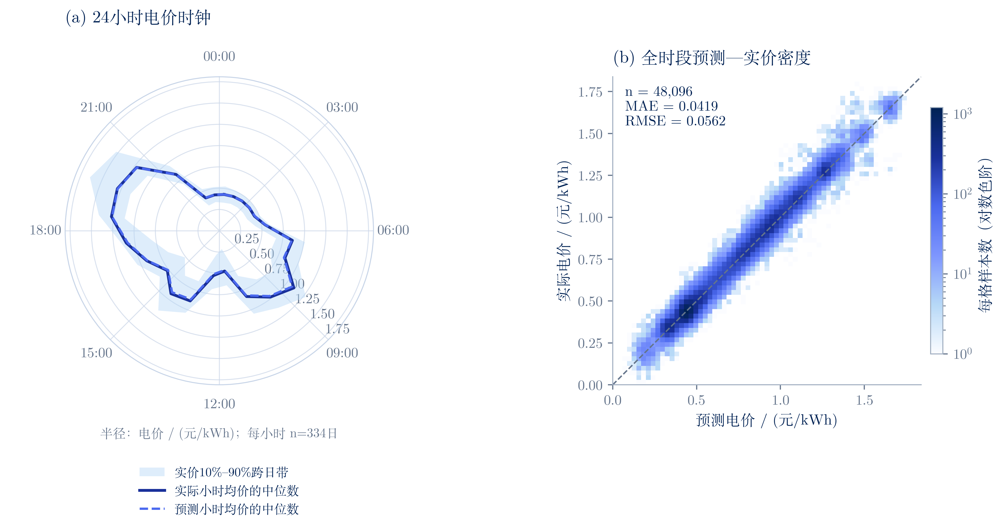
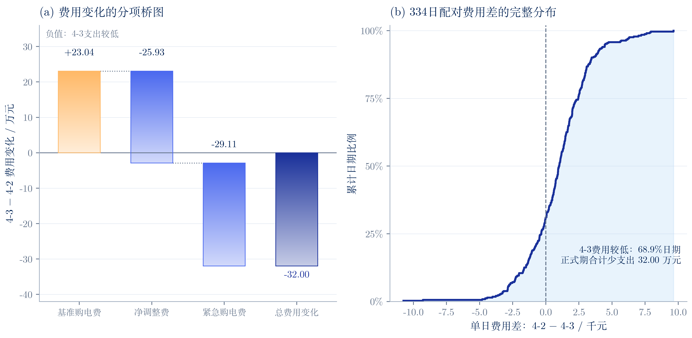
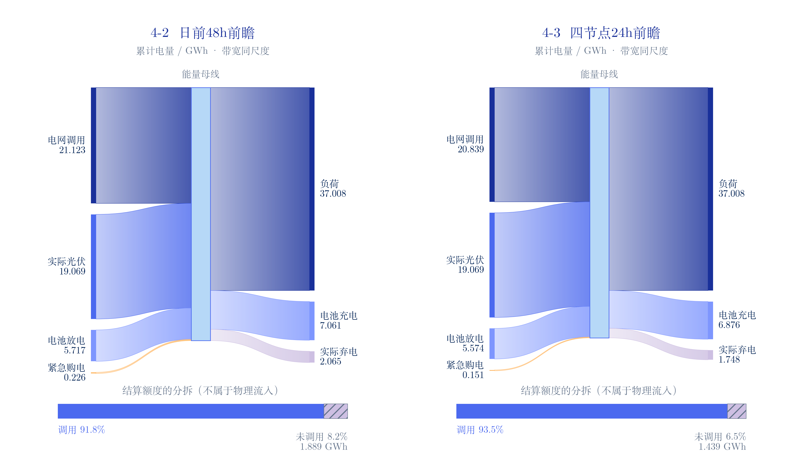
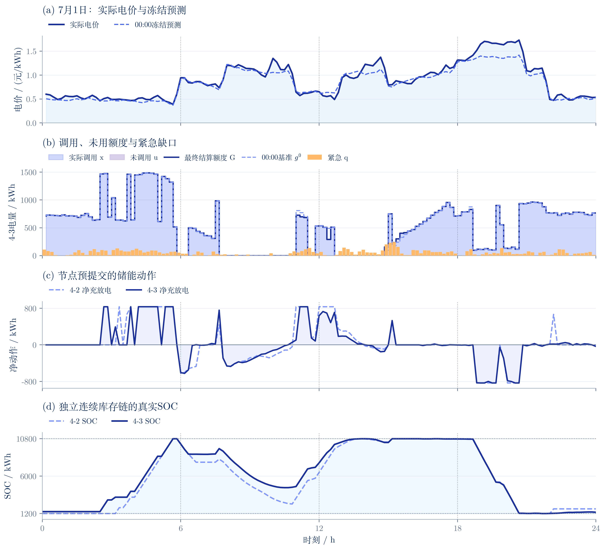
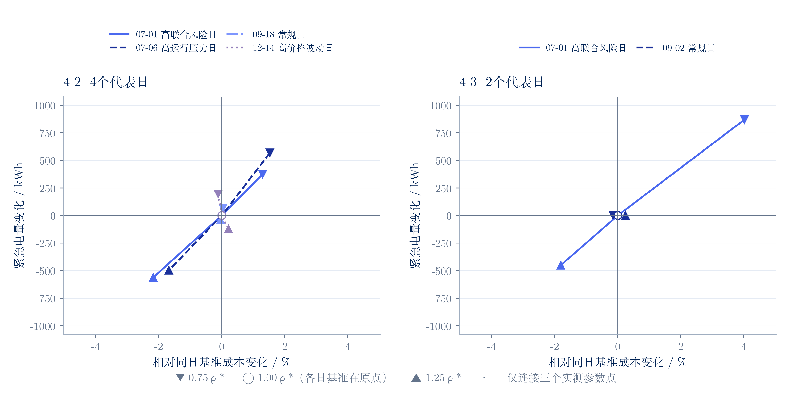

问题四 · 蓝莲花与月白深蓝
六张科研图 · TeX Fandol宋体 / Latin Modern · 400dpi PNG / SVG · 334日正式结果
图7-1 严格因果DRO的双机制决策、结算与执行

价格与负荷预测在当天0点冻结，4-3各节点更新PV及截至当前已实现的信息。4-2优化48h并执行首24h；4-3优化24h并执行首6h。g/c/r均为节点共享计划，实际充放电按承诺计划执行，不能画成事后全路径自适应。x=called、u=unused、w=spill；未调用额度不是弃电。两分支共享方法框架，各自独立运行SOC链，箭头不表示4-2结果作为4-3输入。
SVG矢量图图7-2 电价的日内时钟与严格因果预测密度

正式334日。左图先对每天每小时的6个10分钟值求均值，再跨日计算中位数与10%–90%分位带；分位带不是置信区间。以小时中点定位，首尾连接仅体现日周期统计。右图65×65等宽格统计全部48096点，色阶为对数计数，空格留空，没有裁去极值。实价与预测由两个正式策略共同使用，误差基于10分钟原值重算。
SVG矢量图图7-3 两套完整策略的费用变化与逐日配对分布

共同334日的真实结算比较。4-2总费用15747788.863875元，4-3为15427803.530198元；左图三分项之和精确等于总费用变化。右图保留所有正负日度差，正数表示4-3当日费用较低。两策略初始SOC均6000，最终SOC分别9450.000/1270.573kWh。前瞻长度、更新机会和库存轨迹均不同，结果不是纯FIV/OUV或同初态单日控制实验，不能只凭当日差排序节点价值。
SVG矢量图图7-4 真实能量流与购电额度的调用分拆

全年正式334日累计AC侧电量，1GWh=10^6kWh。两面板带宽统一按绝对电量绘制，输入=PV+电网调用+紧急+放电，输出=负荷+充电+实际弃电，逐日逐槽亦满足平衡。所有流带仅连接公共能量母线，不假定某一来源供给某一特定去向。下方条形各以该策略结算grid为100%，独立展示called与unused；unused没有进入物理母线，也不与spill合并。充放电为AC侧真实计划量，SOC及损耗另按0.9效率核算。
SVG矢量图图7-5 高联合风险日的价—量—库存运行全景

2025-07-01为之前Q4敏感性方案预先选定的高联合风险日。00点价格预测全天不更新。4-3面板实际调用/unused堆叠正好等于最终grid；紧急量单独按真实值展示。4-2与4-3日初SOC分别1200.000/1446.579kWh，来自各自前日，不能当作相同初态单日受控实验。两策略当日紧急量分别10086.550/7718.061kWh。g/c/r在承诺块内预先确定，储能动作不按事后场景重选；两侧效率均0.9。
SVG矢量图图7-6 鲁棒半径扰动的成本—紧急风险轨迹

复用已完成敏感性实验：4-2四代表日、4-3两代表日。只绘ρ=0.75/1/1.25倍基准的18条含基准记录；共同横纵轴尺度，纵轴为紧急量绝对变化，避免零或很小分母夸大百分比。三角形分别标弱/强半径，空心圆为同日基准，线只是离散点的辅助连接，不是已计算连续前沿。全部新增节点Optimal；不能从局部日推出全年参数稳健，终端库存不同须结合原表解释。
SVG矢量图